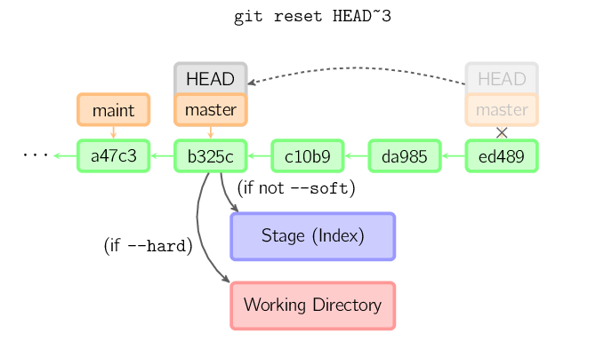

git-简明指南
创建新仓库
git init
检出仓库
执行如下命令以创建一个本地仓库的克隆版
git clone /path/to/repository
如果是远端服务器上的仓库，你的命令会是这个样子：
git clone username$host:/path/to/repository
工作流
你的本地仓库由git维护的三棵树组成，第一个是你的工作目录，它持有实际文件；第二个是暂存区，它像个缓冲区域，临时保存你的改动；最后是HEAD，它指向你最后一次提交的结果。
working-dir----add---->index(stage)-----commit--->HEAD
添加和提交
git add <filename>
orgit add *
orgit add .
then
git commit -m "message"
推动改动
git push origin master
可以把master换成你想要推送的任何分支
如果你还没有克隆现有仓库，并欲将你的仓库连接到某个远程服务器，你可以使用如下命令添加：git remote add origin <server>
如此你就能够将你的改动推送到所添加的服务器上去了
分支
分支是用来将特性开发绝缘开来的。在你创建仓库的时候，master是默认的分支，在其他分支上进行开发，完成后再将他们合并到主分支上。
创建一个叫“feature_x”的分支，并切换过去：
git checkout -b feature_x
切换回主分支：
git checkout master
再把新建的分支删掉：
git branch -d feature_x
除非你将分支推送到远端仓库，不然该分支就是不为他人所见的：
git push origin <branch>
更新与合并
更新你的仓库至最新改动：git pull
以在你的工作目录中获取（fetch）并合并（merge）远端的改动。
要合并其他分支到你的当前分支（例如master），执行：
git merge <branch>
在这两种情况下，git都会尝试去自动合并改动。遗憾的是，这可能并非每次都成功，并可能出现冲突（conflicts），这时候就需要你修改这些文件来手动合并这些冲突（conflicts），改动之后，你需要执行如下命令以将他们标记为合并成功。
git add <filename>
在合并改动之前，你可以使用如下命令预览差异：
git diff <source_branch> <target_branch>
标签
为软件发布创建标签是推荐的
git tag 1.0.0 1b2e1d63ff
1b2e1d63ff是你想要标记的提交ID的前10位字符，可以使用下列命令获取提交ID：
git log
你也可以使用少一点的提交ID前几位，只要它的指向具有唯一性
替换本地改动
假如你操作十五，你可以使用如下命令替换掉本地改动：
git checkout -- <filename>
此命令会使HEAD中的最新内容替换掉你的工作目录中的文件，已添加到暂存区的改动以及新文件都不会受到影响
假如你想丢弃你在本地的所有改动和提交，可以到服务器上获取最新的版本历史，并将你本地主分支指向它:
git fetch origingit reset --hard origin/master
实用小贴士
内键的图形化gitgitk
彩色的git输出：git config color.ui true
显示历史记录时，每个提交的信息只显示一行:
git config format.pretty oneline
交互式添加文件到暂存区：
git add -i
图解Git
基本用法：
上面的四条命令在工作目录、暂存目录（也叫做索引）和仓库之间复制文件
- git add files 把文件放入暂存区域
- git commit 给暂存区域生成快照并提交
- git reset – files 用来撤销最后一次git add files， 你也可以用git reset撤销所有暂存区域文件
- git checkout – fils 把文件从暂存区域复制到工作目录中，用来丢弃本地修改
你可以用git reset -p， git checkout -p， or git add -p进入交互模式
也可以跳过暂存区域直接从仓库取出文件或者直接提交代码。
- git commit -a 相当于运行git add 把所有当前目录下的文件加入暂存区域再运行git commit
- git commit files 进行一次包含最后一次提交加上工作目录中文件快照的提交，并且文件被添加到暂存区域
- git checkout HEAD –files 回滚到复制最后一次提交

绿色的5位字符表示提交的ID，分别指向父节点。分支用橘色显示，分别指向特定的提交。当前分支由附在其上的HEAD标识。 这张图片里显示最后5次提交，ed489是最新提交。 master分支指向此次提交，另一个maint分支指向祖父提交节点。
Diff
有许多种方法查看两次提交之间的变动。
Commit
提交时，git用暂存区域的文件创建一个新的提交，并把此时的节点设为父节点。然后把当前分支指向新的提交节点。下图中，当前分支是master。 在运行命令之前，master指向ed489，提交后，master指向新的节点f0cec并以ed489作为父节点。
即便当前分支是某次提交的祖父节点，git会同样操作。下图中，在master分支的祖父节点maint分支进行一次提交，生成了1800b。 这样，maint分支就不再是master分支的祖父节点。此时，合并 (或者 衍合) 是必须的。
Checkout
checkout命令用于从历史提交（或者暂存区域）中拷贝文件到工作目录，也可用于切换分支。
当给定某个文件名（或者打开-p选项，或者文件名和-p选项同时打开）时，git会从指定的提交中拷贝文件到暂存区域和工作目录。比如，git checkout HEAD~ foo.c会将提交节点HEAD~(即当前提交节点的父节点)中的foo.c复制到工作目录并且加到暂存区域中。（如果命令中没有指定提交节点，则会从暂存区域中拷贝内容。）注意当前分支不会发生变化。
当不指定文件名，而是给出一个（本地）分支时，那么HEAD标识会移动到那个分支（也就是说，我们“切换”到那个分支了），然后暂存区域和工作目录中的内容会和HEAD对应的提交节点一致。新提交节点（下图中的a47c3）中的所有文件都会被复制（到暂存区域和工作目录中）；只存在于老的提交节点（ed489）中的文件会被删除；不属于上述两者的文件会被忽略，不受影响。
如果既没有指定文件名，也没有指定分支名，而是一个标签、远程分支、SHA-1值或者是像master~3类似的东西，就得到一个匿名分支，称作detached HEAD（被分离的HEAD标识）。这样可以很方便地在历史版本之间互相切换。比如说你想要编译1.6.6.1版本的git，你可以运行git checkout v1.6.6.1（这是一个标签，而非分支名），编译，安装，然后切换回另一个分支，比如说git checkout master。然而，当提交操作涉及到“分离的HEAD”时，其行为会略有不同，详情见在下面。
HEAD标识处于分离状态时的提交操作
当HEAD处于分离状态（不依附于任一分支）时，提交操作可以正常进行，但是不会更新任何已命名的分支。(你可以认为这是在更新一个匿名分支。)
一旦此后你切换到别的分支，比如说master，那么这个提交节点（可能）再也不会被引用到，然后就会被丢弃掉了。注意这个命令之后就不会有东西引用2eecb。
但是，如果你想保存这个状态，可以用命令git checkout -b name来创建一个新的分支。
Reset
reset命令把当前分支指向另一个位置，并且有选择的变动工作目录和索引。也用来在从历史仓库中复制文件到索引，而不动工作目录。

如果不给选项，那么当前分支指向到那个提交。如果用–hard选项，那么工作目录也更新，如果用–soft选项，那么都不变。

如果没有给出提交点的版本号，那么默认用HEAD。这样，分支指向不变，但是索引会回滚到最后一次提交，如果用–hard选项，工作目录也同样。
如果给了文件名(或者 -p选项), 那么工作效果和带文件名的checkout差不多，除了索引被更新。
Merge
merge 命令把不同分支合并起来。合并前，索引必须和当前提交相同。如果另一个分支是当前提交的祖父节点，那么合并命令将什么也不做。 另一种情况是如果当前提交是另一个分支的祖父节点，就导致fast-forward合并。指向只是简单的移动，并生成一个新的提交。
否则就是一次真正的合并。默认把当前提交(ed489 如下所示)和另一个提交(33104)以及他们的共同祖父节点(b325c)进行一次三方合并。结果是先保存当前目录和索引，然后和父节点33104一起做一次新提交。
Cherry Pick
cherry-pick命令”复制”一个提交节点并在当前分支做一次完全一样的新提交。
Rebase
衍合是合并命令的另一种选择。合并把两个父分支合并进行一次提交，提交历史不是线性的。衍合在当前分支上重演另一个分支的历史，提交历史是线性的。 本质上，这是线性化的自动的 cherry-pick